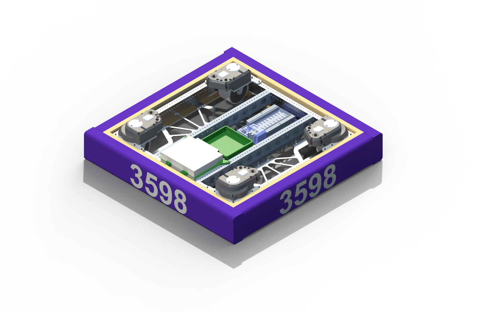
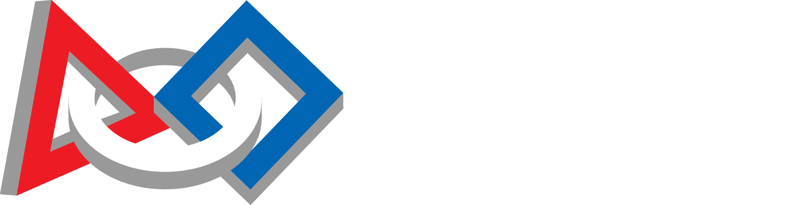
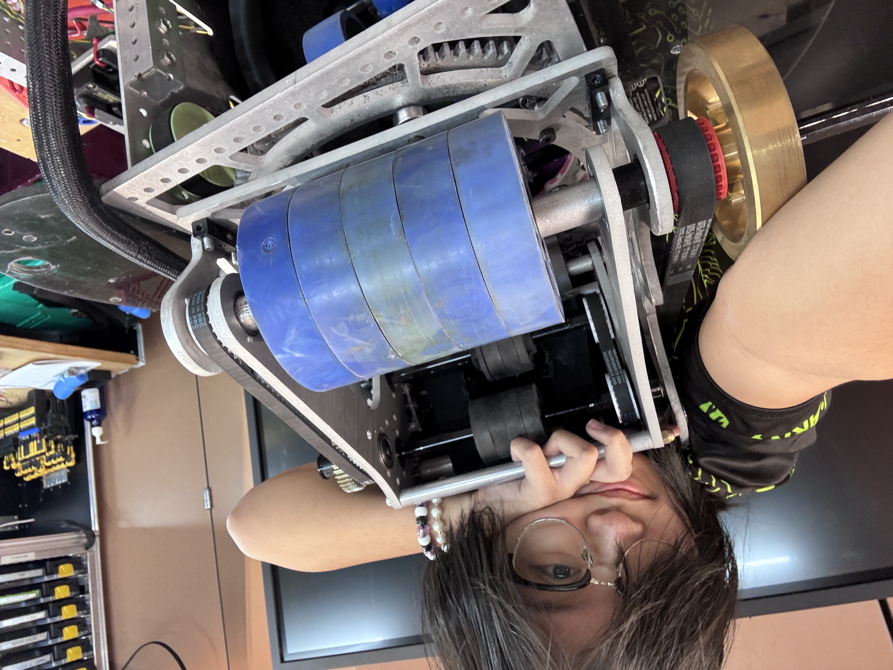
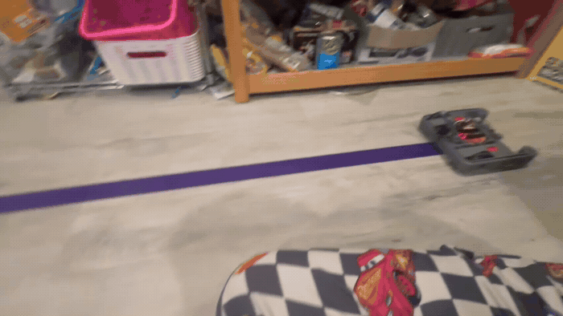
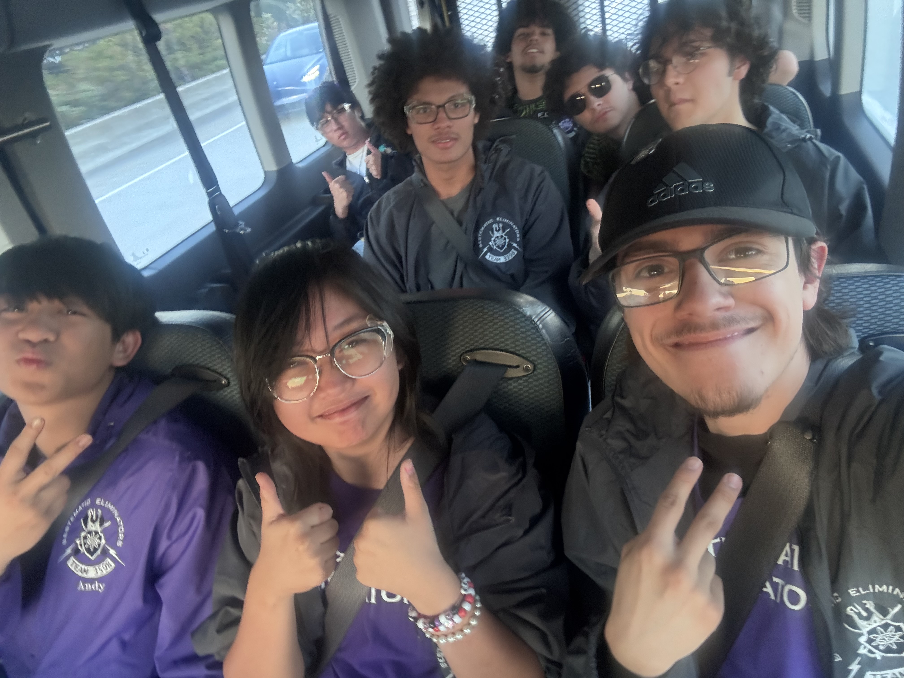
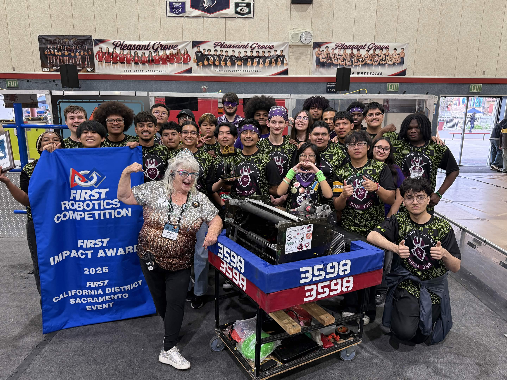
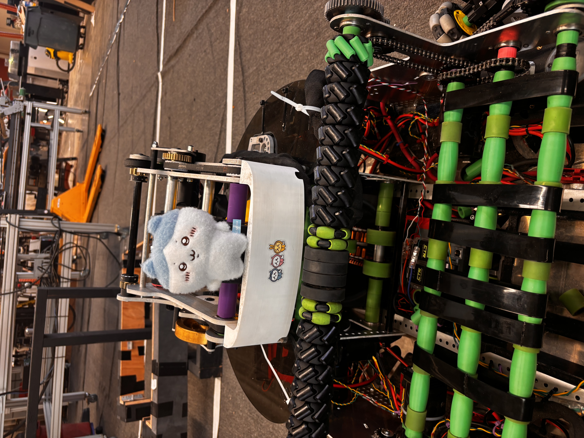
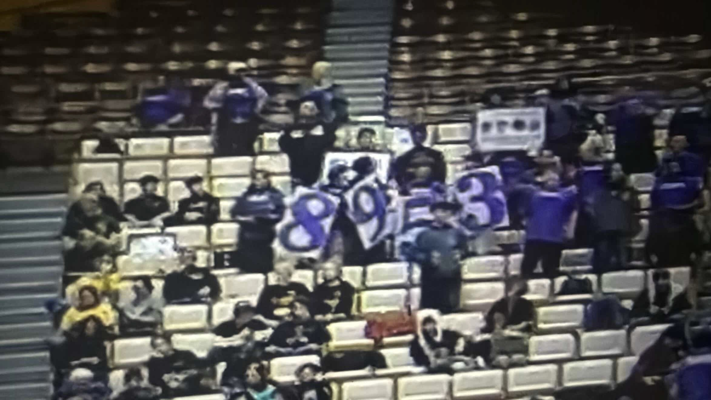
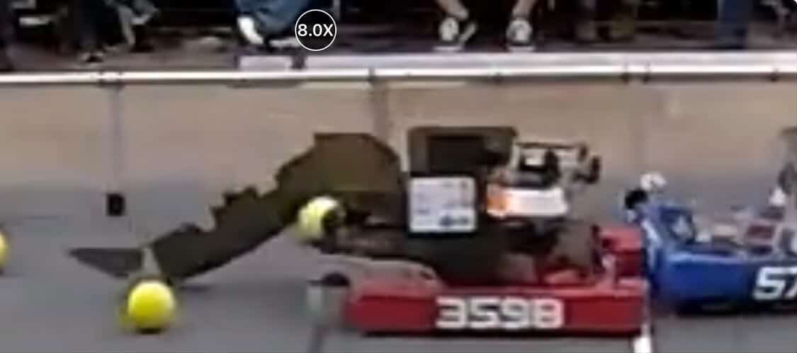

Drivetrain

Overview
[TODO: write drivetrain overview]
My contribution
[TODO: write your contribution]
Design decisions
[TODO: write design decisions]
Iteration / testing
[TODO: write iteration and testing notes]

Team 3598 • CAD • Programming
[TODO: introduce your journey with Team 3598]
[TODO: write robot/project overview]
[TODO: write what you personally contributed]
[TODO: write about your team and competition roles]





[TODO: write drivetrain overview]
[TODO: write your contribution]
[TODO: write design decisions]
[TODO: write iteration and testing notes]
[TODO: write short description]
What changed
[TODO: write what changed]
Why it changed
[TODO: write why it changed]
[TODO: write short description]
What changed
[TODO: write what changed]
Why it changed
[TODO: write why it changed]
[TODO: write short description]
What changed
[TODO: write what changed]
Why it changed
[TODO: write why it changed]
[TODO: write short description]
What changed
[TODO: write what changed]
Why it changed
[TODO: write why it changed]
Clips from the workshop and practice field.
[TODO: write turret overview]
[TODO: write your contribution]
[TODO: write design decisions]
[TODO: write climber overview]
[TODO: write your contribution]
[TODO: write your takeaway]
[TODO: write testing notes]

This subsystem wasn't designed by me originally. The point of this system was to index balls into our feeder, which would then feed them into our shooter. The original design was an omniwheel covered in Cats Tongue, a grippy tape that we use on our intake, and a 3D printed spike that went on top.
The easiest thing we could do before overhauling the entire subsystem was to change the spindexer shape itself. Before, we've tried a rounder shape with flaps, and it was printed using PLA. We also had a version with TPU, which is a soft and flexible material. These versions weren't very effective, so we went with a more triangular shape. Our team scouted the various teams at the Northern California District Championship, and we saw that some teams had success with a cone-like spindexer. 09/30/2026
We noticed that our robot was shooting better in our test, but we can't guarantee this yet because it was filmed when our intake was broken.
I've been working with our CAD team to improve the exterior of the spindexer design. We want to try seeing what a bowl around the spindexer would do, since some of the fuel gets stuck above each other. When I was looking through the code, we have a command that agitates the hopper, so pairing this with the shooting might actually help.
When testing, we also noticed the turret's cables got caught on some of the balls when we have a full hopper.
[TODO: write project overview and your contribution]
[TODO: write project overview and your contribution]
[TODO: write broader reflections and lessons]
The people, memories, and moments that make the team.
[TODO: write about team experiences beyond the technical work]





